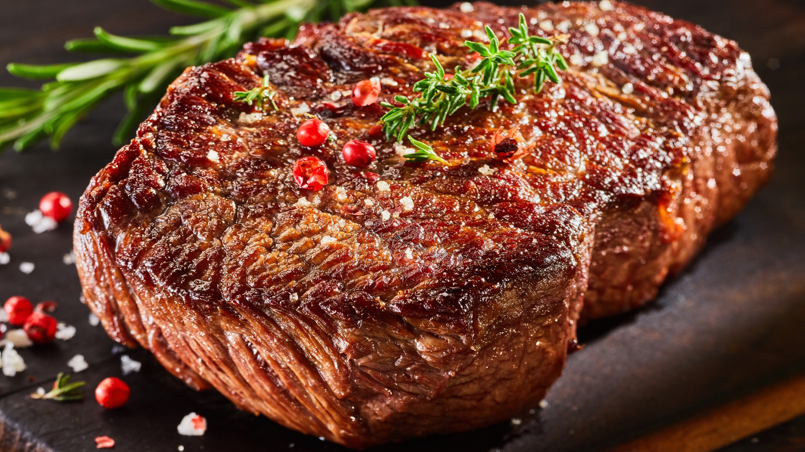

Ingrediente:
800 g carne de porc pentru friptură
1 ardei gras
3-4 linguri ulei
1 ardei iute
1 ceapă
2-3 roşii
2-3 căţei de usturoi
sare
150 ml vin alb
piper


Carnea se spală, se curăţă de pieliţe şi se taie felii groase de 1-2 cm. Feliile de friptură de porc se dau cu puţin piper şi se prăjesc în ulei încins, câte 7-8 minute pe fiecare parte. Se scot din tigaie fără să se înţepe cu furculiţa, ci cu o paletă și se lasă la scurs pe un șervețel de hârtie.
În grăsimea rămasă în tigaie se călesc uşor ceapa şi usturoiul fin tocate. Se sting cu vin îndoit cu apă şi se lasă să fiarbă înăbuşit 5-6 minute.
În sosul de vin, se pun din nou feliile de carne. Se adaugă ardeiul gras tăiat cubuleţe şi ardeiul iute fin tocat şi se lasă să fiarbă, la foc mic, 10-15 minute.
Roşiile se spală, se curăţă de coajă şi se toacă mărunt. Se pun în sosul de la friptură şi se lasă să dea doar câteva clocote. Se potriveşte la gust cu sare şi piper şi se serveşte imediat cu garnitură de orez sau cu salată de legume.